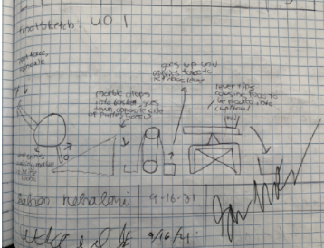
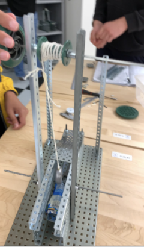

Project Name: Python Covid Escape Room
Course: CSE(Computer Science Essentials)
Duration: 3 Weeks(March 21-April 14(2021))
Objective: Create a Escape Room with Python that has some sort of COVID-19 Related Theme
Type of Project: Partner Project
In this project, me and my partner were tasked with creating an escape room style game on the platform Repl.it, however, there was a twist. We had to somehow incorporate the theme COVID-19, into our escape room. We included this theme in our project by having the reward for the user who escapes be having Covid go away. We also made some of our questions Covid themed. In our code, we incorporated lots of different features that helped our game seem more visually appealing, as well as fun to play. One challenge we faced was incorporating loops. A special thing about this project was that we were not allowed to use for loops. We were able to overcome this challenge by creating our own style of loop. We did this through functions. If you call a function inside a function this simulates a loop. My role in our project was doing a significant part of the coding as well as in-depth documentation. Some skills that helped me during this project were both technical and computer science based. My organization and planning skills helped me create good documentation for our project, as well as good sprint planning. My python knowledge helped me incorporate more advanced features in our app providing for an overall better game such as sleep timers for suspense. For the coding, I made a lot of improvements based on peer feedback. One of the major improvements was adding a difficulty choice for the user. This improved our game a lot and allowed us to add more user input and choice. Me and my partner also made a video, modeling the game and some of the paths you can take.
Project Name: MIT App Inventor Game Design
Course: CSE(Computer Science Essentials)
Duration: 3.5 Weeks(October 19- November 13(2020))
Objective: Create a Game in MIT App Inventor that has something to do with a hot topic news item
Type of Project: Partner Project
In this project me and my partner had to create a video game on a platform named MIT App Inventor. MIT App Inventor is an app designing software that uses block based coding. First, we started off our project as a baseball game, where the user would get the ball pitched towards them then they would hit the ball. Then, we ran into our first challenge. Our app had to be tied to a hot topic news item. This scrapped our whole idea and we had to restart from scratch. Luckily, since there were so many wildfires happening in the world, we were able to come up with an idea for a game about putting out fires. My role on this project was creating a story mode for our game, as well as having good in-depth documentation. Using some of my creativity skills, I was able to create a fun and interactive story mode, where the user is able to play as a firefighter trying to graduate firefighter school. They work they’re way through various challenges and tests, and the story mode even has multiple endings! As for the documentation, my knowledge on organization and neatness, helped us create great documentation that is not super boring to read. Some skills I felt I learned throughout the course of this project were mainly about coding. Being exposed to so much block coding not only helped me become proficient in block based programming, but also helped me understand different types of algorithms. These algorithms could be incorporated into so many other programming languages. Lastly, me and my partner made a video highlighting our game.
Project Name: Project Compound
Course: Honors POE(Principles of Engineering)
Duration: 2 Weeks(September 7-September 21(2021))
Objective: Create a compound machine that accomplishes a daily task with 4 simple machines.
Type of Project: Group Project
This project featured lots of designing, iterating, building, and repeat. With my partners Utkrisht Dembla and David Filipovas we physically built a compound machine that would dispense food. Another challenge of this project was to incorporate four of the six simple machines into our project. We used a wheel and axle, lever, pulley, and an inclined plane. We chose not to use a screw or a wedge due to the practical difficulty of putting them into our compound machine. This compound machine worked by turning a wheel and axle, which powered a pulley. This pulley had a string attached to a weight that was pulled up an inclined plane. Once the weight had reached the top of the inclined plane the pulley string would release causing the weight to drop onto a lever that had food on it. The food would then be dispensed out for the user to grab. Due to this being our first time building a large scale project, we ran into many design issues that had to be solved throughout the course of this project. One of the major ones include not having sound structural stability causing the machine to rattle around when operated, we solved this issue by reinforcing all of the bracing with extra keps nuts and support. A minor issue we ran into was finding a counter balance for the lever, since the food would be stored on one side of the lever, a counterbalance was necessary to keep it level. We solved this issue by adding a crescent wrench to the opposite side. My primary role in this project was in design and documentation. I helped develop some of the key structures and design features for the compound machine. I also worked on a solid amount of the documentation which can be viewed here. I also played a minor role in the construction of our compound machine. Once our project was finished, we could have made improvements in the overall design of the project, as well as the structural stability. Some key skills I was able to take away from this project include physically building, as well as sketching and brainstorming.

